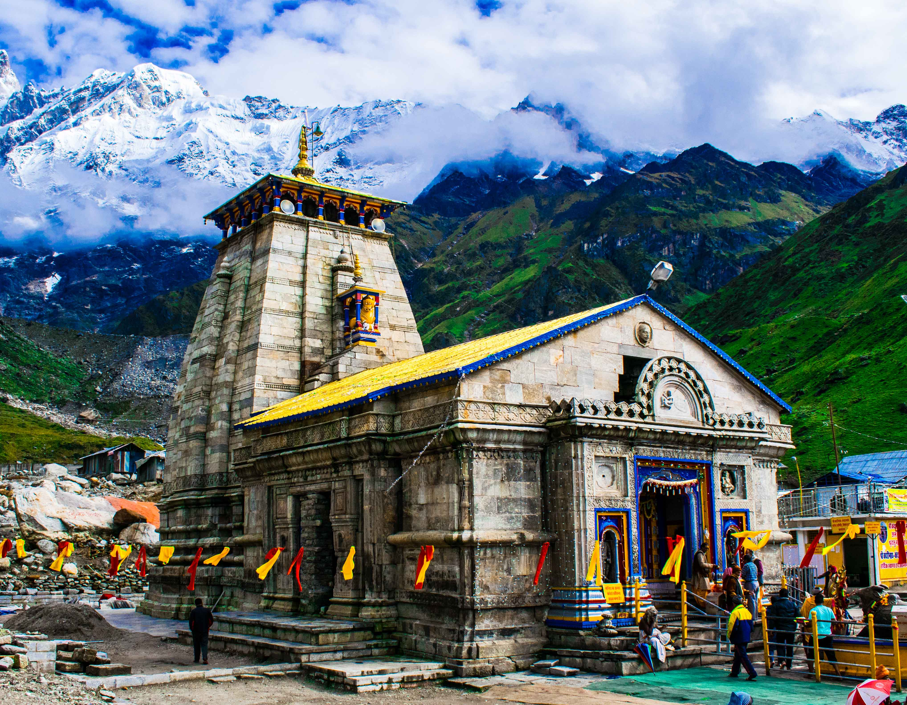
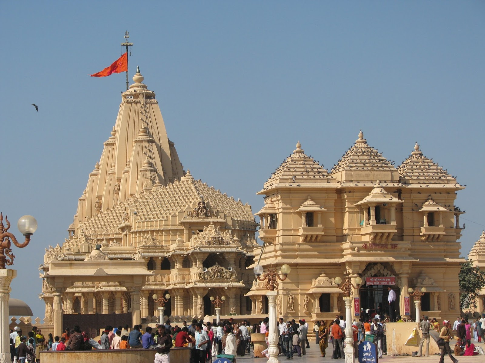

Famous Temples of India

🏔️ Kedarnath Temple – Uttarakhand
Kedarnath Temple, dedicated to Lord Shiva, is one of the twelve Jyotirlingas of India.
It is believed to have been built by the Pandavas and later revived by Adi Shankaracharya in the 8th century.
Located near the Mandakini River, it is surrounded by snow-capped peaks and is part of the Char Dham Yatra.

🕉️ Somnath Temple – Gujarat
The Somnath Temple, also one of the twelve Jyotirlingas, has been destroyed and rebuilt several times in history.
The current structure was reconstructed in 1951. It represents the spirit of faith and resilience in Hinduism.

🚩 Jagannath Temple – Puri, Odisha
Built in the 12th century by King Anantavarman Chodaganga Deva, this temple is dedicated to Lord Jagannath,
a form of Lord Vishnu. It is famous for the annual Rath Yatra, where deities are taken out in grand chariots.

💰 Tirupati Balaji – Andhra Pradesh
The Tirumala Venkateswara Temple, dedicated to Lord Vishnu, is one of the richest temples in the world.
Built around the 9th century, it attracts millions of devotees annually who come to seek blessings of Lord Balaji.

🌸 Meenakshi Temple – Madurai, Tamil Nadu
Dedicated to Goddess Meenakshi (a form of Parvati) and Lord Sundareshwar (Shiva),
this temple is a masterpiece of Dravidian architecture. It was built by King Kulasekara Pandya in the 6th century CE.

🌿 Shri Krishna Janmabhoomi – Mathura, Uttar Pradesh
Located in the birthplace of Lord Krishna, this temple marks the sacred site where Lord Krishna was born.
It has been rebuilt multiple times and remains a central pilgrimage spot for Krishna devotees worldwide.
🎵 Banke Bihari Temple – Vrindavan, Uttar Pradesh
Dedicated to Lord Krishna as Banke Bihari, this temple was built in the 19th century by Swami Haridas.
The idol here was revealed by Swami Haridas himself, representing Krishna in his most charming form.
🏔️ Vaishno Devi Temple – Jammu & Kashmir
This temple is dedicated to Goddess Vaishno Devi and located inside a cave in Trikuta Mountains.
It is one of the holiest shrines in India, believed to grant all wishes of the devotees who visit with pure heart.